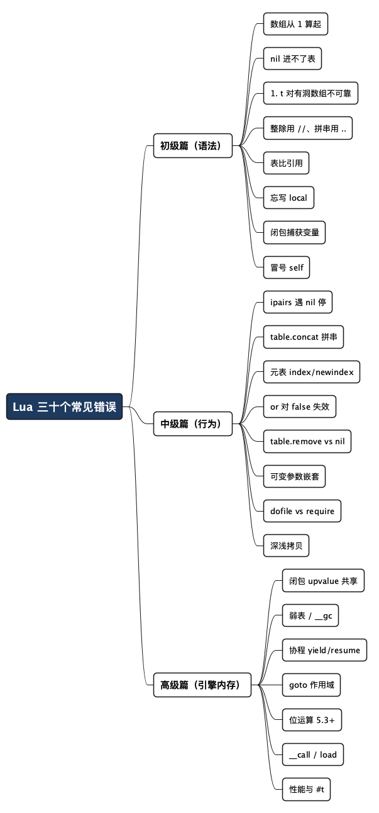

Lua 编程三十个常见错误：初级、中级、高级，逐个拆解
Posted on 四 22 10月 2026 in Tech
| Abstract | Lua 编程三十个常见错误：初级、中级、高级，逐个拆解 |
|---|---|
| Authors | Walter Fan |
| Category | Tech |
| Version | v1.1 |
| Updated | 2026-10-25 |
| License | CC-BY-NC-ND 4.0 |
大纲
展开看看
- 初级篇（1-10）：数组从 1 算起 / nil 进不了表 /
#有洞 / 整除/// 多返回值括号 / 拼接../ 表比引用 / 忘写local/ 闭包捕获变量 / 冒号self - 中级篇（11-20）：
ipairs遇 nil 停 / 字符串不可变 / 元表__index+__newindex/or对false失效 /table.removevsnil/string.format类型 /pcall定位 / 可变参数嵌套 /dofilevsrequire/ 深浅拷贝 - 高级篇（21-30）：闭包 upvalue 共享 / 弱表 /
__gc注册时机 / 协程 yield/resume /goto作用域 / 位运算 /__call/load动态编译 /%q转义 / 性能与#t
解释性脚本语言有个通病：语法轻、类型松、作用域宽，写起来爽，踩起坑来也顺滑。Python 会让你在"可变默认参数"上栽跟头，JavaScript 让你在 == 和闭包循环上翻车，Lua 也逃不掉这一套——门面更小，坑却不一定更少。毕竟它是给嵌入式环境、游戏引擎、Nginx/OpenResty、Redis 事务做"胶水"的语言，追求的是越小越好，代价就是每一个机制都身兼数职。
其实这些坑很少是语法错——Lua 的语法能简就简。真正的雷全来自它的"抠门"设计：数组从 1 开始、nil 不能当值、表比较的是引用、连整数除法都是后来才补的。每一条单独看都挺合理，凑在一起就成了新手连环坑。
下面这三十条是各色 Lua 场景（游戏脚本、Nginx/OpenResty 配置、Redis 事务、物联网设备）里最高频的翻车，按初级、中级、高级三层排开——初级是刚入门就撞的墙，中级是写业务脚本会踩的灰，高级则要懂 Lua 的引擎与内存。每条都配了能自己跑的例子，跑之前建议先猜答案，再对输出——猜错的那条，才是你真该记住的。运行环境是 Lua 5.5，多数内容在 5.3/5.4 上都成立。
动手练习：光看不练，这些坑还是记不牢。我自己攒了一个练习仓库 walter-fan/lua-playground，把常见语法、陷阱、小例子都整理成了可以直接跑的脚本，边看本文边改边跑，比死记硬背高效得多。强烈建议 clone 下来对着练。
初级篇：入门就撞的墙
这一层的坑，几乎每个从别的语言切到 Lua 的人都会踩一遍。它们都源于 Lua"用最少机制做最多事"的设计。先看十条。
1. 数组从 1 算起，t[0] 是 nil
Lua 的数组下标从 1 开始，这是它最容易得罪从 C、Python、Java 转过来的人的一点。
local t = {"a", "b", "c"}
print(t[0]) --> nil，你以为的"第一个"
print(t[1]) --> a，真正的第一个
print(#t) --> 3，长度
不止是数组字面量，普通表也一样。写 for i = 0, #t 大概率漏掉最后一个元素、多出一个 nil。规则就一条：想遍历数组，从 1 到 #t。
2. nil 进不了表：赋值 nil 等于删除
这是 Lua 数据模型的核心，也最反直觉：一个表里根本存不下 nil。 你往某个键写 nil，等于把那个键从表里抹掉。
local m = {a = 1, b = 2}
m.b = nil -- 不是存了个 nil，是删掉了 b
print(m.b) --> nil
print(next(m, "b") ~= nil) --> false，键 b 真的不存在了
后果是双重的：想用"把字段置空"来占位，办不到；想遍历表排查字段是不是"空值"，你会发现空值键根本不在遍历结果里。所以要表示"这个键存在但没有值"，得用 false 或者一个哨兵值，不要用 nil。
3. # 只对"无洞"数组才可靠
#t 取数组长度，看着简单，可它有个前提：数组里不能有洞。 一旦中间少了一个元素，长度就变得暧昧。
local t = {}
t[1] = "x"; t[2] = "y"; t[3] = "z"; t[5] = "w" -- 下标 4 是洞
print(#t) --> 3 或 5 都合法，取决于实现，别指望它准
这不是哪个版本的 bug，而是语言规范本身的定义：对带洞的表，#t 返回的是任意一个"边界"（border）——也就是某个满足 t[n] ~= nil 且 t[n+1] == nil 的 n。表里有多个这样的边界时，返回哪个由实现自行决定，各版本、各次运行都可能不同。换句话说，带洞数组不能靠 #t 确定遍历上界。
教训：清空元素要用 t[#t] = nil 从尾部删，不要删中间；要精确长度或可靠的遍历上界，自己维护一个计数器。
4. 没有整数除法：5/2 是 2.5
别的语言里 5/2 在整数语境下可能就是 2，Lua 不这么干——默认都是浮点。
print(5 / 2) --> 2.5，不是 2
print(7 // 2) --> 3，整除运算符（Lua 5.3 起才有）
print(7 % 2) --> 1，取余
Lua 5.3 引入 // 之前，想做整除得自己 math.floor(5/2)。今天写新代码直接用 // 就对了。顺带一提，Lua 5.3+ 默认用 64 位整数，多数场景不会踩浮点精度问题——只有刻意转成浮点（比如 big + 0.0）时才需要担心大数精度。
5. 多返回值的括号陷阱
Lua 函数能一次返回多个值，但一旦套上括号，就只剩第一个。这是"看着对，实际丢数据"的高发地带。
local function f() return 1, 2, 3 end
print(f()) --> 1 2 3
print((f())) --> 1，括号只留下第一个
同样，return f() 和 return (f()) 也是天差地别。这个坑在拼接多返回值、以及把调用塞进表达式时最容易踩。
6. 字符串拼接是 ..，不是 +
Lua 的字符串拼接运算符是一对点号 ..，用 + 去拼字符串会直接报错。
print("hello" .. " world") --> hello world
-- print("hello" + " world") -- 报错：attempt to perform arithmetic on a string
print(10 .. 20) --> 1020，连数字也被转成字符串拼起来
用 + 拼字符串是老习惯，Lua 直接给你一个运行时错误，还算友好。真正要小心的是 .. 和数字在一起时的优先级，必要时加括号。
7. 表比较的是引用，不是内容
在 Lua 里 == 比较两张表，比较的是是不是同一个表，不是里面的内容是否相同。
local a = {}
local b = {}
print(a == b) --> false，看着长得一样，其实是两个表
local c = a
print(a == c) --> true，指向同一个表
要比较整张表内容，得自己写深比较或者用现成库。这也解释了为什么很多 Lua bug 是"明明内容一样却不相等"——你拿到的是两个不同副本。
8. 忘写 local：全局变量泄漏
Lua 变量默认是全局的。忘写 local，你就悄悄在全局表 _G 里塞了个变量。
x = 42 -- 没写 local，泄漏到了全局
local y = 43 -- 这才是局部
print(_G.x) --> 42，确凿全局
表面看只是"多占个名字"，实际危害：两个文件撞名互相污染、函数里误写成全局造成状态泄漏、内存只涨不回收。凡是脚本和函数里的变量，一律 local。 实在担心手滑，可以给脚本包一层 local 作用域，或者用工具查"赋值了没声明"的全局。
9. 闭包捕获的是变量，不是当下的值
这个坑最隐蔽，也是我 review 时看走眼的根源。闭包记住的是那个变量，不是变量当时的取值。
local funcs = {}
local k
for i = 1, 3 do
k = i -- 共享同一个外层局部变量 k
funcs[i] = function() return k end
end
print(funcs[1](), funcs[2](), funcs[3]()) --> 3 3 3，全是最后一个
三个闭包抓的全是同一个 k，循环结束时 k 停在 3，所以打印出来全是 3。要每个闭包记住自己的值，得让它们各抓各的：
local funcs = {}
for i = 1, 3 do
local j = i -- 每次循环新开一个局部变量
funcs[i] = function() return j end
end
print(funcs[1](), funcs[2](), funcs[3]()) --> 1 2 3
顺带说明：for 的循环变量本身在每次迭代都是一个全新的局部变量（这一点在 Lua 5.1 以来各版本都成立），所以直接抓循环变量 i 反而不会中招。真正的坑是上面第一段那种"在循环里共享同一个外层 local k"的写法——它在任何版本上都会翻车，最保险还是用 local j = i 各抓各的。
10. 冒号运算符是 self 的语法糖
a:b() 看着像普通的"调用对象方法"，其实是 a.b(a) 的缩写——冒号把你这个对象自动塞给了方法的第一个参数（名叫 self）。
local obj = { x = 10 }
function obj:get() return self.x end -- obj:get 等于 obj.get(obj)
local other = { x = 99 }
print(obj:get()) --> 10
print(obj.get(other)) --> 99，点号就要自己传参，相当于"借"方法给别人
用点号定义、用冒号调用，或者反过来，是最常见的低级错。规则：定义和调用保持一致——你说 obj:get，就得是 function obj:get()。
中级篇：写业务脚本会踩的灰
到了这一层，语法你已经熟了，坑从"不会写"变成"写出来不对"。这一级的坑，多是被 Lua 的隐式行为和便利写法背刺。下面十条。
11. ipairs 遇到 nil 就停，pairs 才不管顺序
ipairs 只在数组的连续区间里遍历，遇到第一个 nil 就停；pairs 则把所有键都扫一遍，但不保证顺序。
local t = {10, 20, 30}
t[1] = nil -- 头一个就是洞
local n1, n2 = 0, 0
for _ in ipairs(t) do n1 = n1 + 1 end -- 想遍历整个数组？
for _ in pairs(t) do n2 = n2 + 1 end
print(n1) --> 0，ipairs 一看 t[1] 是 nil 就放弃了
print(n2) --> 2，pairs 数的是真实存在的键
想遍历"从 1 开始、带洞"的数组，自己用 for i = 1, #t 更可控。而 pairs 的遍历顺序在程序里是不能当承诺用的——依赖顺序的代码，回头会被气哭。
12. 字符串不可变，拼接别用 .. 死循环
Lua 里字符串是不可变的，s = s .. x 每来一次就新建一个字符串，旧的那份等 GC 回收。
local s = ""
for i = 1, 100000 do
s = s .. i -- 一万次拼接 = 一万次新建+拷贝，越来越慢
end
要拼一堆片段，正确姿势是先收集再一次性拼：
local parts = {}
for i = 1, 100000 do
parts[#parts + 1] = tostring(i)
end
local s = table.concat(parts) -- 一次成型，快得多
table.concat 是 Lua 里拼字符串的标配，不是可有可无的优化。
13. 元表 __index 和 __newindex，只配一个会出岔子
__index 管"读不存在的键"，__newindex 管"写不存在的键"。很多人只配 __index，结果写入时发现根本没生效。
local t = setmetatable({}, {
__index = function(_, k) return "default:" .. k end
})
print(t.nope) --> default:nope，读缺省键，走了 __index
local t2 = setmetatable({}, {
__newindex = function(t, k, v) rawset(t, k, "wrapped:" .. v) end
})
t2.x = 5
print(t2.x) --> wrapped:5，写新键，走了 __newindex
如果只想要"读不到就返回默认"，__index 就够了；但一旦涉及写保护、日志、代理，__newindex 也要一起配。两者常常成对出现。
14. a or 默认值 对 false 失效
or 默认值是 Lua 里最顺手的写法，但 false 在 Lua 里是"假但不是 falsy 到能用 or"——false or 默认 会走到默认值上。
local function f(a) return a or "default" end
print(f(nil)) --> default
print(f(false)) --> default，false 没保住，你想要的可能是 false
想在 false 和 nil 之间区分（比如配置项是"显式关闭"还是"没设"），不能靠 or，得显式判断 a == nil：
local function f(a)
if a == nil then return "default" else return a end
end
print(f(nil)) --> default
print(f(false)) --> false，这次保住了
15. table.remove 是"删完补齐"，t[k] = nil 是"留个洞"
两者都叫删除，语义天差地别。
local arr = {"a", "b", "c"}
table.remove(arr, 2) -- 删除 arr[2]，后面的前移补齐
print(table.concat(arr, ",")) --> a,c，长度变 2
local arr2 = {"a", "b", "c"}
arr2[2] = nil -- 只把 b 抹掉，不补位
-- 长度就变成了无法确定的值，见初级 #3 的洞
需要维持"数组紧凑、下标连续"，用 table.remove；只是清一个键，用 t[k] = nil。混着用，数组就悄悄长出洞来。
16. string.format 的 %d 对字符串不强转
C 背景的人习惯了 %d 把东西当数字。Lua 的 %d 传入字符串会直接报错，不会像别的语言那样偷偷转换。
print(string.format("num=%d", 42)) --> num=42，没问题
local ok, err = pcall(string.format, "num=%d", "hello")
print(ok, err)
--> false bad argument #2 to 'string.format' (number expected, got string)
传进来的值类型不归一，string.format 是最容易炸的一处。给 %d/%x 前，先确保是数字，或者用 %s 配 tostring。
17. pcall 里 error(msg) 的定位不直观
pcall 帮你接住错误，但默认只给你 error() 里的那句话，不带堆栈。
local function bad() error("boom") end
local ok, err = pcall(bad)
print(ok, err) --> false boom，就一句话，不知道哪行炸的
想拿到调用栈，用 xpcall 配 debug.traceback：
local ok, err = xpcall(bad, debug.traceback)
print(tostring(err):sub(1, 60))
--> (command line):2: boom
--> stack traceback: ...
自己埋点报错时，error("msg", 2) 还能把错误位置指向上层，而不是那行 error 调用本身。
18. 可变参数 ... 在嵌套函数里"消失"
最阴的坑之一：... 只在声明了可变参数的那个函数里有效。你在 outer 里想传给内层非可变参数的 inner，直接引用 ... 是编译错误。
function outer(...)
local function inner()
return select("#", ...) -- 编译错误：inner 不是可变参数函数
end
return inner()
end
解决两招：要么在内层函数声明可变参数并把 ... 传下去，要么一进来就用 local args = table.pack(...) 把参数先捞出来存成表，再在内层用。
function outer(...)
local args = table.pack(...) -- 立刻固化，含 args.n 记录个数
return #args
end
print(outer("a", "b", "c")) --> 3
19. dofile 每次跑一遍，require 只跑一次
两者都能把另一个文件当代码执行，但语义完全不同。dofile 每次都重新执行并返回结果；require 有缓存，同一文件只执行一次，之后直接返回缓存过的表。
-- 假设 m.lua 里 print("loaded") 并 return {n = 1}
local a = dofile("m.lua") --> loaded（第一次执行）
local b = dofile("m.lua") --> loaded（又执行一遍）
print(a == b) --> false，两份不相等的返回
local c = require("m") --> loaded（只执行一次）
local d = require("m") --> 不再打印
print(c == d) --> true，同一份缓存
dofile 适合"每次都要重读"的配置热载；require 适合模块——它还会在 package.loaded 里缓存，跨文件共享一份状态。别拿 dofile 当"强制重新加载模块"，那会搞出两份状态互相打架。
20. 深浅拷贝不分，嵌套表悄悄共享
Lua 没有内置拷贝函数。自己写的"拷贝"多半是浅拷贝，嵌套的表只复制了引用，改一处全漏。
local orig = { a = 1, nested = { b = 2 } }
local shallow = {}
for k, v in pairs(orig) do shallow[k] = v end
shallow.nested.b = 99
print(orig.nested.b) --> 99，浅拷贝只复制了引用，原表被改了
要真正独立，得递归深拷贝（遇到嵌套表再拷一层），或者用现成库。凡是数据结构里套着表，就默认浅拷贝不够用。
高级篇：要懂引擎和内存
这一层写给要写引擎、C 绑定、高性能服务的资深 Lua 工程师。下面十条，每条的坑都藏得比前两层深。
21. 闭包和 upvalue：共享的状态会互相干扰
初级 #9 讲过闭包抓变量。高级一点的坑是：从同一个工厂造出来的闭包，可能共享同一份 upvalue 状态。
local function make()
local n = 0
return function() n = n + 1; return n end,
function() return n end
end
local inc, get = make()
print(get()) --> 0
print(inc(), inc()) --> 1 2
print(get()) --> 2，inc 改的 n，get 能看到——它们共享同一份 upvalue
这在"计数、缓存、状态容器"里很有用，但也意味着这两个闭包的寿命要一起管——只要其中一个还活着，被共享的 upvalue 就不会被回收。要各自独立的计数器，就得分别调用 make()。
22. 弱表：键弱值弱，别把"弱键"当"一定回收"
setmetatable(t, { __mode = "k" }) 让键成为弱引用——键没别处引用时，这个条目会被 GC 清掉。但它不是立竿见影的，得等 GC 跑，而且语义要看清楚。
local wk = setmetatable({}, { __mode = "k" })
do
local k = {}
wk[k] = "something"
end -- k 离开作用域，没有别的强引用了
collectgarbage(); collectgarbage() -- 跑两轮更稳
local n = 0
for _ in pairs(wk) do n = n + 1 end
print(n) --> 0，键已被回收，条目跟着没了
弱表（弱键找重、弱值做缓存）是 Lua GC 的利器，但要注意：值若还有强引用，条目就一直留着；弱键表的键一旦"复活"，行为可能出乎意料。别指望它立刻回收，也别用它当精确的内存控制。
23. __gc 终结器：真正的坑是"注册时机"，不是版本
网上流传一个说法——"Lua 5.4 起普通表的 __gc 不再调用"。这是误传。 从 Lua 5.2 开始，普通表就支持 __gc 终结器（5.1 及更早只有 userdata 能有 __gc），这个能力在 5.3、5.4、5.5 一路保留，并没有被削弱。
local o = setmetatable({ gate = true }, {
__gc = function(self) print("finalize") end
})
o = nil
collectgarbage()
collectgarbage()
--> finalize -- 5.2 起（含 5.4/5.5）确实会打印
真正的坑在于注册时机：__gc 必须在调用 setmetatable 的那一刻就已经在元表里，GC 才会把这个表登记为"需要终结"的对象。事后再往元表里补 __gc，是不生效的。
local mt = {}
local o = setmetatable({}, mt)
mt.__gc = function() print("late") end -- 补得太晚，没被登记
o = nil
collectgarbage(); collectgarbage()
--> 什么都不打印
另外两个容易忽略的细节：终结器的调用顺序和 GC 时机不由你控制；对象在 __gc 里"复活"（把自己重新挂回某个强引用）后，下次回收不会再触发 __gc。想要确定性的收尾，纯 Lua 里更稳妥的是显式关闭函数（obj:close()）或 Lua 5.4+ 的 to-be-closed 变量（local x <close> = ...），把 __gc 当兜底而非主力。
24. 协程：yield 和 resume 的值是"对向"传的
协程调度看着像普通调用，实际是 resume 把参数送进协程，协程内 yield(值) 把值带回 resume——方向是反的。
local co = coroutine.create(function(a)
print("coro got:", a) -- 来自第一次 resume(10)
local r = coroutine.yield("1st", "2nd") -- 这两个值给 resume 的第一个返回
print("coro got back:", r) -- 来自第二次 resume("sent-back")
return "done"
end)
print(coroutine.resume(co, 10)) --> true 1st 2nd
print(coroutine.resume(co, "sent-back")) --> true done
print(coroutine.status(co)) --> dead
很容易把 yield 的返回值当成"外部传进来"读反。记住一条：yield(x) 的返回值，是下一次 resume(参数) 里带的参数。
25. goto 跳进局部变量的作用域：5.4 起直接编译错误
goto 是好用的控制流，但在 Lua 5.4 起，跳到会"越过一个局部变量初始化"的位置是编译错误——因为它要求变量要么完全在作用域内，要么完全不进入。
do
goto skip
local x = 10 -- 跳过了 x 的初始化，但标签在 x 的作用域内
::skip::
print(x)
end
-- 编译错误：<goto skip> jumps into the scope of 'x'
想用 goto 跳出循环或做结构控制没问题；但不能用它"跳过"局部变量定义再回来读它。把 goto 的目标标签放在局部变量作用域之外，或改用条件循环。
26. 位运算：& | ~ << >>，Lua 5.3 起才有
一些老代码或 LuaJIT 环境可能没有整套位运算。Lua 5.3 起才有 &（与）、|（或）、~（非）、<<、>>。
print(5 & 3) --> 1，101 & 011 = 001
print(5 | 2) --> 7，101 | 010 = 111
print(~5) --> -6，补码取反
print(1 << 4) --> 16
要留意：LuaJIT（2.0/2.1 默认）走的仍是 5.1 语义，没有这些运算符——它用的是 bit 库（bit.band 等）。在 OpenResty（默认 LuaJIT）里写位运算，得看你的运行环境到底是哪个 Lua。
27. __call 与对象式调用：obj() 需要元表
想让一个 table 能"被当函数调用"，得给它配 __call。忘了配，直接 obj(args) 会报"attempt to call a table value"。
local obj = setmetatable({ base = 10 }, {
__call = function(self, x) return self.base + x end
})
print(obj(5)) --> 15，obj 被调用，self 自动填入
在 Lua 里做 OOP，__call、__index（继承）、__tostring（打印）常常是一套。忘了 __call，你的"函数对象"会一脸茫然地报错，而不是跑起来。
28. load 动态编译：错误信息和来源要自己盯
load/loadstring 把字符串当代码编译执行。错误信息里会带上"来自哪段文本"，但因为常常没有文件/行号，debug 起来比写死的代码费劲。
local f, err = load("return 1+") -- 语法错误
print(f, err)
--> nil [string "return 1+"]:1: unexpected symbol near <eof>
load 返回两个值：编译好的函数，或 nil + 错误信息。别只用第一个返回值，错误信息在你 pcall 它之前就暴露了。动态代码也意味着 err 里可能带输入内容，别把未转义的输入直接塞进日志级别太高的地方。
29. string.format("%q", s) 小心转义后"看起来不对"
%q 是用来安全地把字符串转成 Lua 源码字面量的，\n、引号都会被转义。新手拿它当普通格式化，得到的结果却带上了反斜杠。
print(string.format("%q", "a\nb"))
--> "a\
b" -- 原样输出带转义，适合当源码，不适合直接给人看
要给人看的文本，用 %s；要再次作为 Lua 源码嵌入，才用 %q。选错，字符串里明明是个换行，打出来却是一堆 \n。
30. 性能：全局查找比局部慢，#t 常数要看环境
Lua 的全局变量要在 _G 里查表，比局部变量（存在寄存器/栈里）慢得多。循环里反复用某个函数，先 local 一下能明显提速。
local sum = 0
local floor = math.floor -- 把全局定位到局部
for i = 1, 100000 do
sum = sum + floor(i / 2)
end
性能优化的顺序一般是：先用 local 缓存热函数 → 避免循环里创建闭包/表 → 少用可变参数 → 再考虑 C/FFI 下沉热点。 至于 #t，对"无洞"数组它用二分查找定位边界，是 O(log n) 而非严格常数（对紧凑数组足够快）；一旦带洞，它返回的只是任意一个边界，数值和耗时都别去假设。
总结：坑都在"抠门"设计上，记规则比记单词有用
把三十条摊开看，真正想记住的不是三十个孤立知识点，而是一条主线：Lua 用最少的机制做最多的事，恰恰因为机制少，每个机制都承担了多重含义。 数组从 1 开始，是舍去空数组的代价;nil 不能当值，是"一表通用"的代价;表比引用，是"不用额外类型"的代价。理解了这条逻辑，很多坑不用背也能推出来。
给你一份能抄的检查清单，按三级排：
初级（写对语法）
- [ ] 数组遍历用
1..#t，别用0 - [ ] 想占位/表示空字段，用
false，别用nil - [ ] 长度要精确就自己计数，别依赖
# - [ ] 整除用
//，取余用% - [ ] 只想取多返回值里的第一个，才加括号
- [ ] 拼字符串用
.. - [ ] 比表内容就深比较，别用
== - [ ] 变量一律
local - [ ] 循环里造闭包，
local j = i先各自抓一个 - [ ] 冒号定义配冒号调用
中级（写对行为）
- [ ] 遍历缺洞数组用
for i = 1, #t，别指望ipairs越过 nil - [ ] 拼大量字符串用
table.concat - [ ] 元表要读写代理，
__index和__newindex一起配 - [ ] 要在
false和nil之间区分，别用a or 默认 - [ ] 要紧凑数组用
table.remove，只清键用t[k] = nil - [ ]
string.format的%d前先确认是数字 - [ ] 要定位错误，用
xpcall(bad, debug.traceback) - [ ] 可变参数进嵌套函数，先
table.pack(...)固化 - [ ] 模块共享用
require，热载配置才用dofile - [ ] 结构里套着表，默认浅拷贝不够，要深拷贝
高级（懂引擎内存）
- [ ] 共享 upvalue 的闭包，状态互相牵连、寿命一起管
- [ ] 弱表别指望立刻回收，值有强引用条目就不走
- [ ] 表的
__gc必须在setmetatable时就配好（事后补无效）；确定性收尾用close - [ ] 协程
yield返回的是下次resume的参数 - [ ]
goto目标标签别越过局部变量作用域 - [ ] 位运算看环境：Lua 5.3+ 有
&|~<<，LuaJIT 用bit库 - [ ] 物件要能被调用，配
__call - [ ]
load记得接住第二个返回值（错误信息） - [ ] 要嵌入源码才用
%q，给人看用%s - [ ] 热循环先用
local缓存全局函数
我写到今天，照样会在初级第一条上栽跟头——从别的语言切过来的人，肌肉记忆比大脑诚实得多。所以别急着怪自己笨，先怪这三级清单没贴屏幕边上。
清单记在脑子里不如亲手踩一遍。我把这三十条背后的例子和更多语法练习整理进了 walter-fan/lua-playground，clone 下来逐个跑、逐个改，才是最快记住它们的方式。
全文思维导图
@startmindmap
<style>
mindmapDiagram {
node {
BackgroundColor #F8F9FA
RoundCorner 10
Padding 10
FontSize 13
}
:depth(0) {
BackgroundColor #1E3A5F
FontColor white
FontSize 18
FontStyle bold
}
:depth(1) {
FontSize 15
FontStyle bold
}
:depth(2) {
FontSize 13
}
}
</style>
* Lua 三十个常见错误
** 初级篇（语法）
*** 数组从 1 算起
*** nil 进不了表
*** #t 对有洞数组不可靠
*** 整除用 //、拼串用 ..
*** 表比引用
*** 忘写 local
*** 闭包捕获变量
*** 冒号 self
** 中级篇（行为）
*** ipairs 遇 nil 停
*** table.concat 拼串
*** 元表 index/newindex
*** or 对 false 失效
*** table.remove vs nil
*** 可变参数嵌套
*** dofile vs require
*** 深浅拷贝
** 高级篇（引擎内存）
*** 闭包 upvalue 共享
*** 弱表 / __gc 注册时机
*** 协程 yield/resume
*** goto 作用域
*** 位运算 5.3+
*** __call / load
*** 性能与 #t
@endmindmap

本作品采用知识共享署名-非商业性使用-禁止演绎 4.0 国际许可协议进行许可。 欢迎在我的个人网站 https://www.fanyamin.com 访问原文并评论。